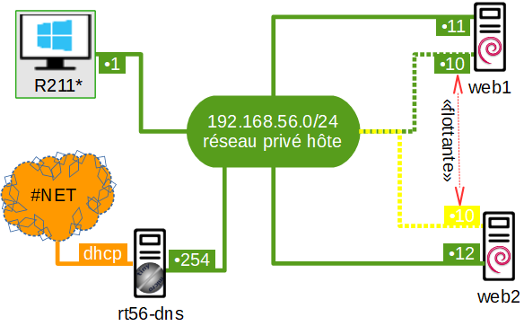

web2
127.0.0.1 localhost 127.0.1.1 web2 192.168.56.11 web1 # The following lines are desirable for IPv6 capable hosts ::1 localhost ip6-localhost ip6-loopback ff02::1 ip6-allnodes ff02::2 ip6-allrouters
# This file describes the network interfaces available on your system # and how to activate them. For more information, see interfaces(5). # The loopback network interface auto lo iface lo inet loopback # privé hôte 192.168.56.0/24 auto enp0s3 iface enp0s3 inet static address 192.168.56.12/24 gateway 192.168.56.254 # ✋ valider la configuration "Réseau" sous VirtualBox, puis redémarrer…
apt update apt install -y apache2 apt install -y heartbeat
bcast enp0s3 deadtime 5 keepalive 1 node web1 web2 auto_failback on
web1 IPaddr::192.168.56.10 apache2
auth 1 1 md5 motdepasse